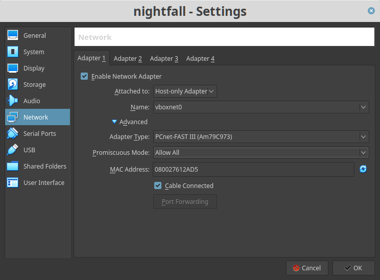
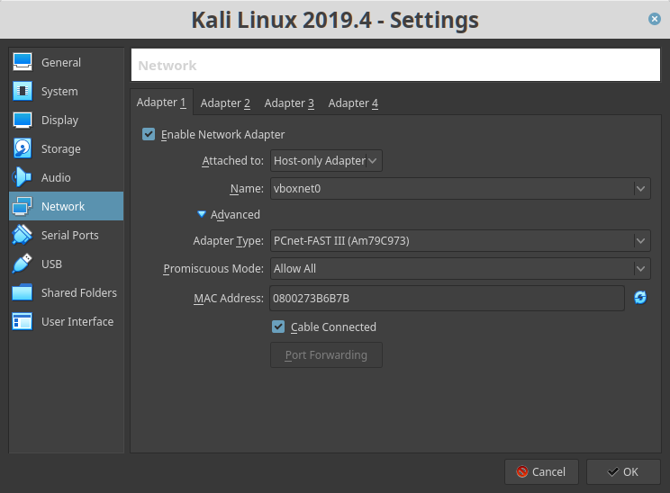
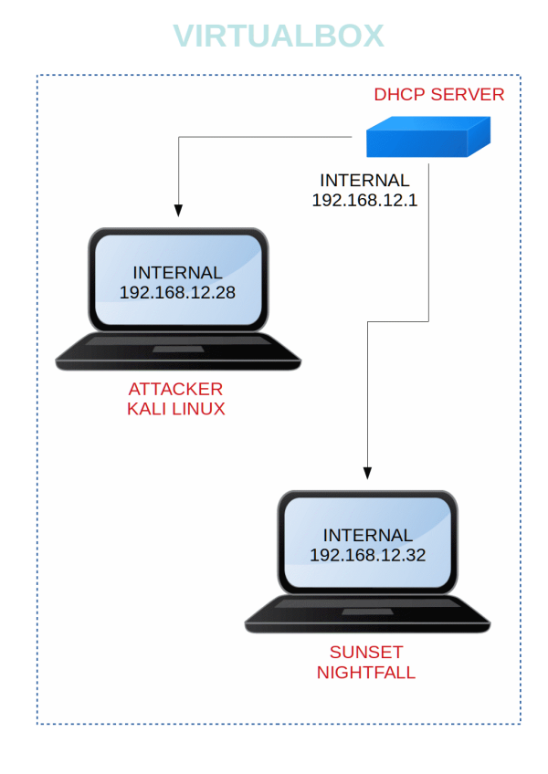

Sunset Nightfall
▸ 1. Scan Network
▸ 2. Finding Services and Ports
▸ 3. Enumeration
▸ 3.1 Port 80
▸ 3.2 Samba
▸ 3.3 Hydra
▸ 4. Explotiation
▸ 4.1 Log into FTP
▸ 4.2 FTP Inject Key
▸ 4.3 SSH 1st Flag
▸ 4.4 Getting root shell
▸ 5. Privilege Escalation
▸ 5.1 Password Cracking
▸ 5.2 Root shell (2nd flag)
Difficulty: Beginner
Flag: Boot to root.
Learning: Network scanning | Enumeration | Exploitation | Privilege Escalation
Reference: https://www.vulnhub.com/entry/sunset-nightfall,355/
Download (Mirror): https://download.vulnhub.com/sunset/nightfall.zip
Download (Torrent): https://download.vulnhub.com/sunset/nightfall.zip.torrent
Install the machine on VirtualBox:
1. Download the file and extract it.
2. On Virtualbox choose File->Import Appliance.
3. Select the file “ova”.
4. Accept to import.
Virtual Machine Network Settings


Watch your Machine IP.

Diagram
 Index
Index